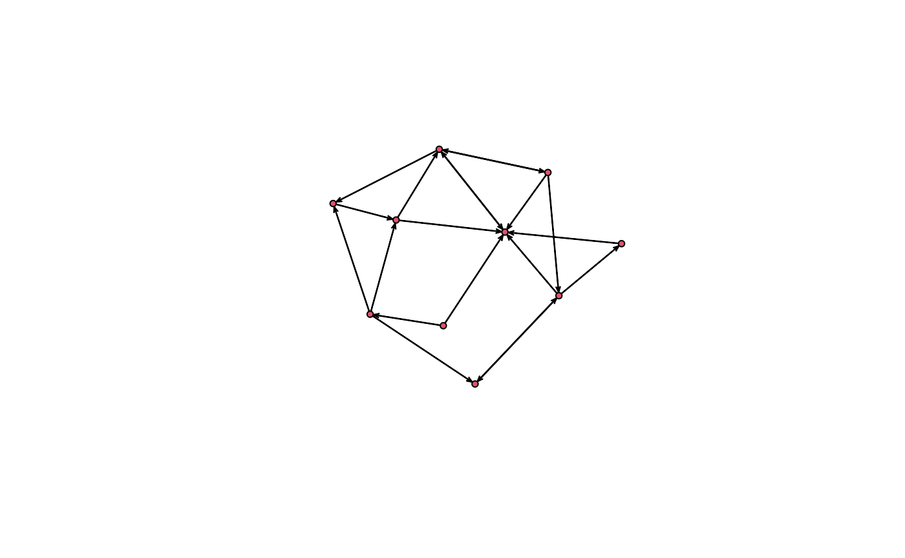
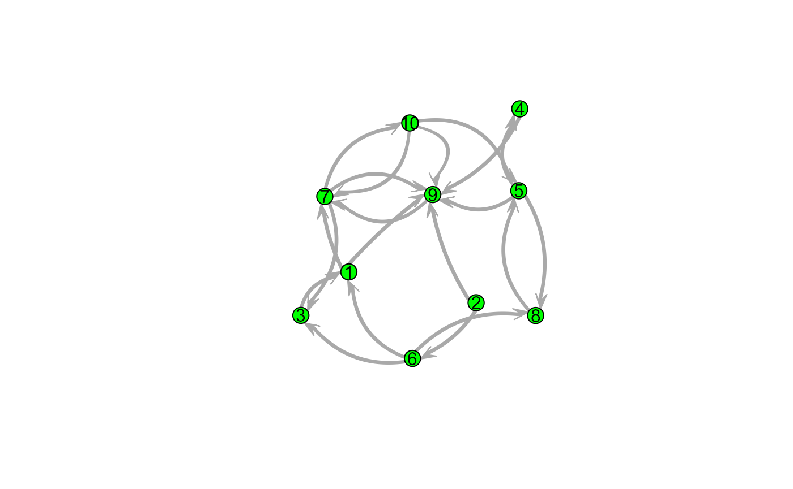
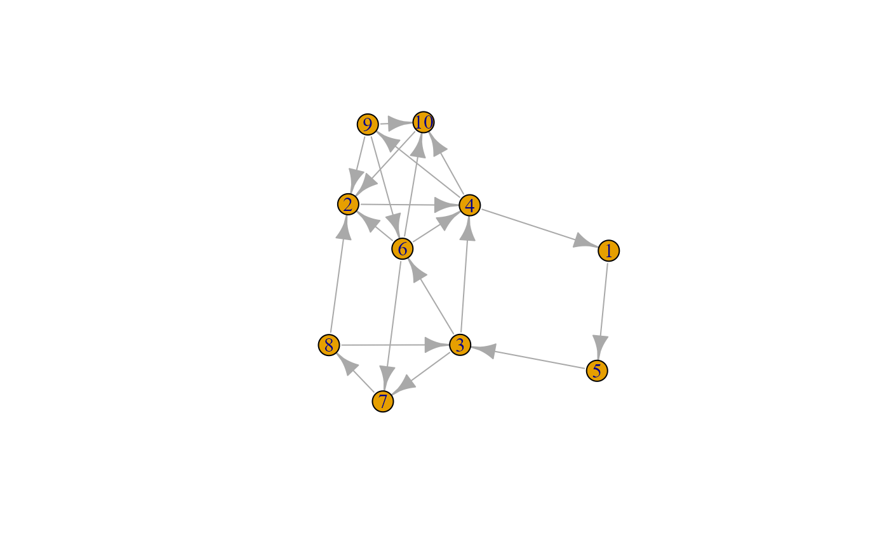
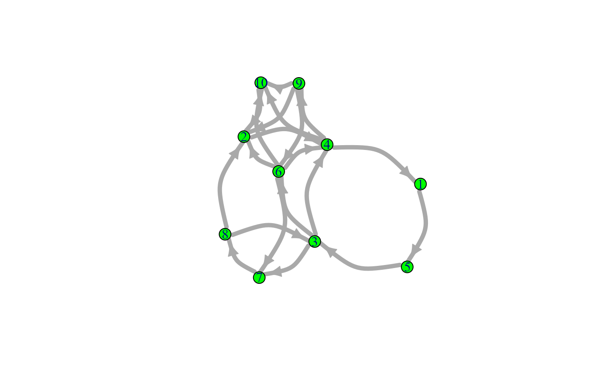
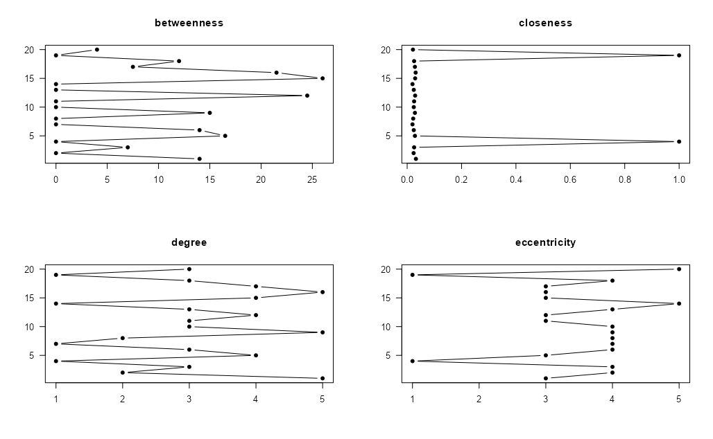

Plotting
Plotting in snafun
The snafun package provides a plot(x)
function, which allows the user to make a quick plot of a network,
regardless of whether x is a graph of class
network or igraph. This function wraps
network::plot.network and igraph::plot.igraph
and will use the default settings of these functions.
However, one can also use all of the arguments from
network::plot.network and igraph::plot.igraph
to make the plots nicer when wanted.
Here is an example for a network object.
g_n <- snafun::create_random_graph(10, "gnm", m = 20, graph = "network")
snafun::plot(g_n)
snafun::plot(g_n, vertex.cex = 3, vertex.col = "green", edge.lwd = 10,
edge.col = "darkgrey", usecurve = TRUE, edge.curve = .05,
arrowhead.cex = 3, displaylabels = TRUE, label.pos = 5)
And for an igraph graph object:
g_i <- snafun::create_random_graph(10, "gnm", m = 20, graph = "igraph")
snafun::plot(g_i)
snafun::plot(g_i, vertex.size = 12, vertex.color = "green", edge.width = 5, edge.curved = TRUE)
The most common use case for the function is to make as quick plot of
the network, using default settings, as one usually would do in the
initial phase of a study. For this, snafun provides a
consistent function name.
The snafun package also contains a function to plot
centrality scores of the vertices. The function and its options are
specified as follows:
snafun::plot_centralities(
net,
measures = c("betweenness", "closeness", "degree", "eccentricity"),
directed = TRUE,
mode = c("all", "out", "in"),
k = 3,
rescaled = FALSE,
...
)This yields a plot like this:

The function takes an object of class igraph or
network and plots the centrality scores you select, so you
can visually compare them. Make sure to pick the required value for
mode (the default is “all”).
Basic plotting in igraph
The plot function alone already plots nodes and edges
with default options. More sophisticated specifications need to be
manually set. It works with networks of class igraph.
igraph::plot.igraph(net,
edge.arrow.size = .2, # edge and arrow size
edge.color = "red", # edge color
vertex.color = "blue", # vertex filling color
vertex.frame.color = "green", # vertex perimeter color
vertex.label = igraph::V(net)$label, # vertex labels
vertex.label.cex = 0.6, # vertex label size
vertex.label.color = "black") # vertex label colorBasic plotting in network
The gplot function alone already plots nodes and edges
with default options. More sophisticated specifications need to be
manually set. It works with networks of class network.
network::plot.network(net,
arrowhead.cex = 0.2, # edge and arrow size
edge.col = 'red', # edge color
vertex.col = 'blue', # vertex filling color
vertex.border = 'green', # vertex perimeter color
displaylabels = TRUE, # vertex labels
label.cex = 0.6, # vertex label size
label.col = 'black') # vertex label colorBasic plotting in sna
The gplot function alone already plots nodes and edges
with default options. More sophisticated specifications need to be
manually set. It works with networks of class network.
sna::gplot(net,
arrowhead.cex = 0.2, # edge and arrow size
edge.col = 'red', # edge color
vertex.col = 'blue', # vertex filling color
vertex.border = 'green', # vertex perimeter color
displaylabels = TRUE, # vertex labels
label.cex = 0.6, # vertex label size
label.col = 'black') # vertex label colorThe gplot function has a few additional arguments
compared to network::plot.network and is therefore slightly
more flexible.